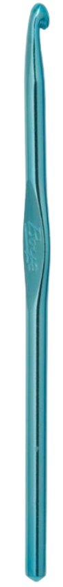
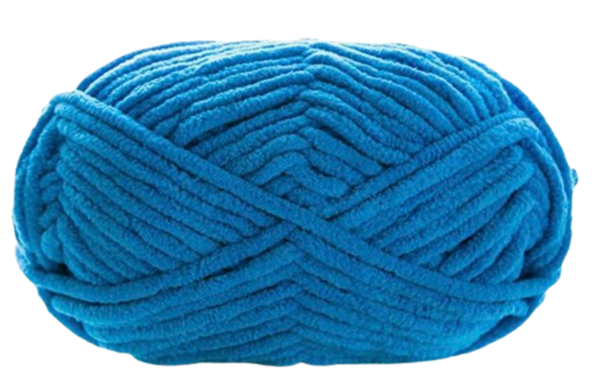

Essential Crocheting Tools
Here are some essential tools for crocheting:



These tools are used in various ways to create beautiful crochet projects.
Here are some essential tools for crocheting:
These tools are used in various ways to create beautiful crochet projects.